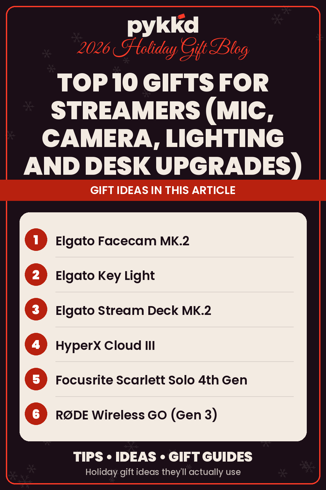

Top 10 Gifts for Streamers (Mic, Camera, Lighting and Desk Upgrades)

Looking for gifts for streamers that will actually improve their stream? Start here: ten mic, webcam, lighting and desk upgrades for Twitch and YouTube setups. Streamers are fun to shop for because their setup is never finished. There's always a cleaner sound, a sharper camera or a faster way to switch scenes on their wish list.
This list is part of our top 10 series for hobbies and personalities, right after our Top 10 Gifts for Gamers. It covers the four things every stream depends on: audio, video, lighting and control. Many picks also appear in our Gifts for Photographers and Content Creators guide.
Quick picks:
- Best overall: HyperX QuadCast S USB Microphone
- Best budget: Govee Smart RGB LED Strip Lights
- Best for PC streamers who juggle scenes: Elgato Stream Deck MK.2
- Best for IRL streamers: RØDE Wireless GO (Gen 3)
If you like these, see our Gaming and Streaming Setup Upgrades guide.
How we chose these streamer gifts
We stuck to brands streamers already know, like HyperX, Elgato, Focusrite, RØDE, Govee and Anker. Each description is based on what the product is designed to do according to its listing, and every pick comes with honest downsides. Where the author uses a product himself, we've added an Author's take.
1. HyperX QuadCast S USB Microphone
Viewers will forgive a blurry camera, but not bad audio. The HyperX QuadCast S is a USB condenser mic with four polar patterns, tap-to-mute with an LED indicator, a built-in shock mount and pop filter, and customizable RGB lighting. It plugs into a PC, Mac, PS4 or PS5 and works with OBS Studio, Streamlabs and Discord.
Who it's for: PC, Mac and PlayStation streamers whose audio needs an upgrade. Skip it if they stream on Xbox.
Downsides: It isn't compatible with Xbox consoles. Like most condenser mics, it can pick up room and keyboard noise, so placement matters.
Author's take
The author uses a QuadCast S with adjustable RGB lighting alongside his headset, and people say they can hear him very clearly on it.
2. Elgato Facecam MK.2 Webcam
The Elgato Facecam MK.2 is a webcam built for streaming. It captures uncompressed 1080p at 60fps, supports HDR, and comes with Elgato's Camera Hub software for DSLR-style control over settings like ISO and shutter speed. A slide-over privacy shutter is built in.
Who it's for: Desk streamers with a free USB 3.0 port who want a sharper, smoother webcam picture.
Downsides: It tops out at 1080p, not 4K. Uncompressed video needs a USB 3.0 port, and like any webcam, it looks best with good lighting (see the next pick).
3. Elgato Key Light
Good lighting is the cheapest way to make any camera look more expensive. The Elgato Key Light is a 2800-lumen LED panel with an adjustable color temperature from warm amber to cool white. It clamps to the desk and is controlled over Wi-Fi from the Control Center app or a Stream Deck.
Who it's for: Streamers whose camera looks dark or flat and who are happy to control lights from an app or Stream Deck.
Downsides: It's one of the bigger spends on this list, and there are no physical buttons on the light itself, so everything runs through the app or a controller.
4. Elgato Stream Deck MK.2
The Elgato Stream Deck MK.2 has 15 customizable LCD keys that switch scenes, mute the mic, play sound effects, post to social media and control lights in one tap. It has plugins for OBS, Twitch, YouTube, Discord and Spotify, and works on Mac and PC.
Who it's for: PC and Mac streamers who switch scenes, mute and run sound effects mid-stream. Skip it if they only stream from a console.
Downsides: It takes some setup time to get the most out of it, and it's built for computer-based streaming, so console-only streamers won't get as much out of it.
Author's take
The author uses his Stream Deck every day to launch games, adjust volumes and toggle his Govee lights. The MK.2 gives you the same one-press shortcuts in a 15-key layout.
5. HyperX Cloud III Wired Gaming Headset
Streamers need to hear the game and chat clearly. The HyperX Cloud III has angled 53mm drivers, memory foam cushions and a detachable noise-cancelling mic. It connects by USB-C, USB-A or 3.5mm, so it works across PC and consoles.
Who it's for: Streamers who play on PC and consoles and want one headset with a detachable mic for both.
Downsides: It's wired, so they'll be tethered to their setup.
Author's take
The Cloud III is the author's everyday headset. The sound is great for the price, and the spatial surround sound is a real help in FPS games.
6. Focusrite Scarlett Solo 4th Gen Audio Interface
For the streamer who wants to move from USB to an XLR microphone, the Focusrite Scarlett Solo 4th Gen is a compact USB-C interface with one XLR mic preamp and one instrument input. Focusrite lists a 120dB dynamic range and an Air mode that adds presence to vocals. It also appears in our Gifts for Music Lovers guide.
Who it's for: Streamers ready to move from a USB mic to an XLR mic. Skip it if they don't own an XLR mic yet.
Downsides: It doesn't include a microphone, so they'll need an XLR mic to use it.
7. RØDE Wireless GO (Gen 3)
Not every stream happens at a desk. The RØDE Wireless GO (Gen 3) is a two-transmitter wireless mic kit with a receiver and charging case. It records 32-bit float audio on board as a backup, uses GainAssist to level volume automatically, and works with cameras, USB-C phones and computers. It's ideal for IRL streams and short clips.
Who it's for: IRL streamers and short-clip creators who record away from the desk.
Downsides: It's a splurge, and a streamer who only broadcasts from one chair will get more from the QuadCast S.
8. Govee Smart RGB LED Strip Lights
Colored backlighting gives a stream background depth and personality. The Govee Smart RGB LED Strip Lights run 16.4 feet, are controlled from the Govee Home app or with Alexa and Google Assistant, and include scene modes and music sync.
Who it's for: Streamers who want a colorful background with app or voice control. Skip it if they still need a light for their face.
Downsides: The adhesive needs a clean, dry surface to stick well, and the strips are for indoor use only. Accent lights don't replace a key light for lighting a face.
Author's take
The author runs a whole Govee setup, from wave lights and monitor backlights to light bars and floor lamps, and switches them from his Stream Deck.
9. WESTREE Dual Monitor Stand Riser
Most streamers run two screens: one for the game, one for chat and OBS. The WESTREE Dual Monitor Stand Riser is a wood and steel shelf long enough for two monitors, with storage space underneath for a controller, a capture device or cables.
Who it's for: Two-monitor streamers who want more room for gear and cables under their screens.
Downsides: Measure their desk first, since it's a long stand. It raises monitors to one fixed height, so it isn't a substitute for an adjustable monitor arm.
10. Anker Prime Charging Station (250W)
A streaming desk is full of things that need power. The Anker Prime Charging Station has six ports (four USB-C and two USB-A), up to 250W total and a small LCD screen that shows charging status in real time. For more ideas, browse our Top 10 Anker Gifts.
Who it's for: Streamers with a desk full of devices to charge at once. Skip it if they only top up a phone.
Downsides: It's designed for the desk, not for travel, and it's more charger than most people need if they only top up a phone.
Author's take
The author uses Anker products himself and trusts the brand.
Quick picks by budget
- Small add-ons: Govee LED strip lights or the WESTREE monitor riser
- Mid-range upgrades: HyperX Cloud III, HyperX QuadCast S or Elgato Facecam MK.2
- Bigger gifts: Elgato Stream Deck MK.2, Focusrite Scarlett Solo or Anker Prime Charging Station
- Splurge: Elgato Key Light or RØDE Wireless GO (Gen 3)
Tips for buying streamer gifts
- Fix the weakest link first. If their audio is rough, start with the mic. If their camera looks dark, get a light before a new webcam.
- Check their platform. PC, Mac and console streamers have different needs, and some gear (like the QuadCast S on Xbox) won't work everywhere.
Want more ideas? Browse our Gifts for Photographers and Content Creators, Best Gifts for Gamers, Desk and Home Office Gifts and Cool Tech Gadgets guides, or explore every tech gift.
As an Amazon Associate I earn from qualifying purchases. Links to Amazon on this page are affiliate links; prices and availability change often, so check Amazon for current details.